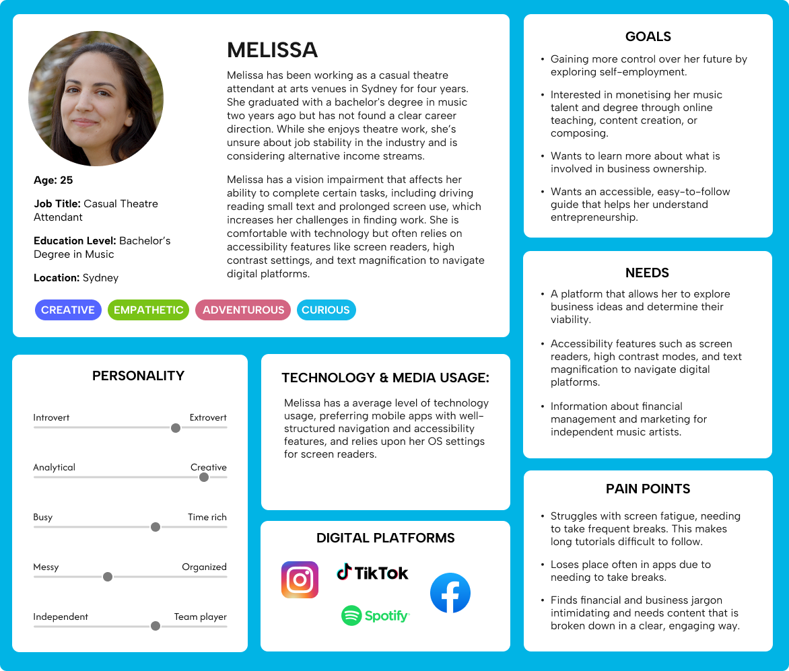
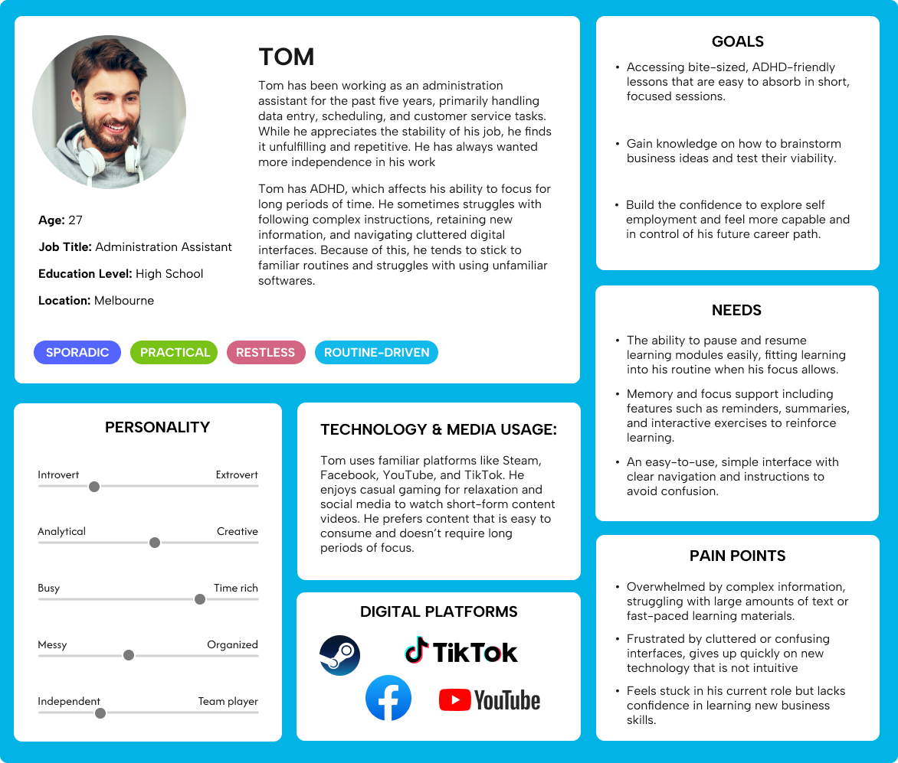
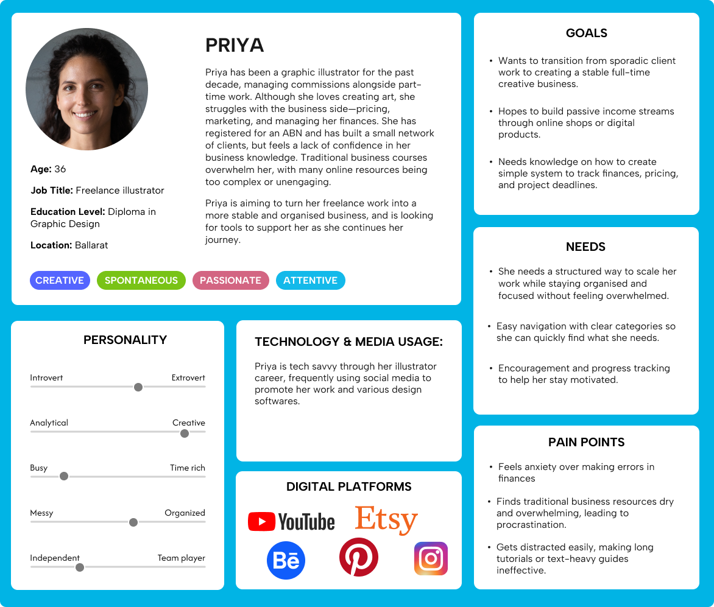
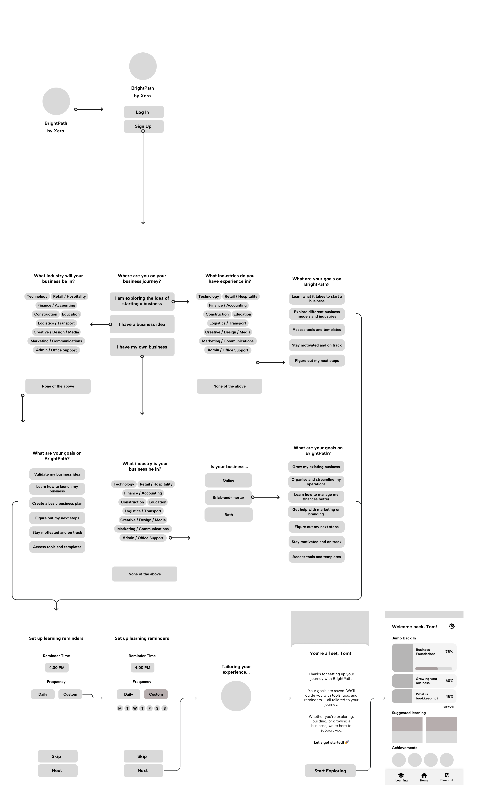
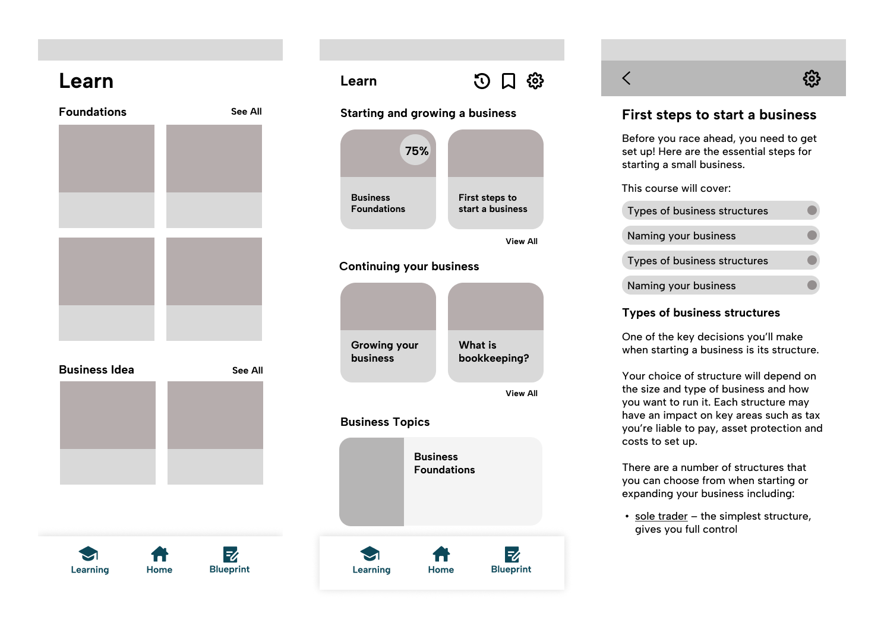
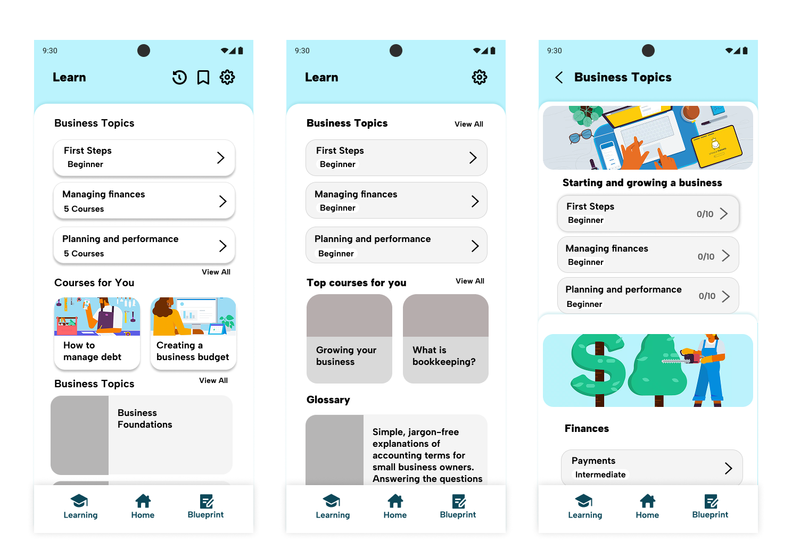

An inclusive Android app concept empowering aspiring entrepreneurs — especially those with ADHD and vision impairments — to build business knowledge at their own pace.
Role
UX Designer (Solo)
Client
Xero Accounting
Duration
12 Weeks, 2025
Deliverable
Figma Prototype
Overview
BrightPath is a mobile-first learning app designed for aspiring entrepreneurs at the very earliest stages of starting a business, people who are often underserved by existing tools, particularly those with accessibility needs. The project was developed in response to a design brief from Xero, the cloud-based accounting platform used by over 4.2 million small businesses worldwide.
The app offers guided learning modules across key business topics, with progress tracking and quizzes built in. The goal was to make entrepreneurship education inclusive, confidence-building, and genuinely usable for people with disabilities, not as an afterthought, but from the ground up.
View larger
The Brief
Xero came to us with a clear priority: small businesses are the backbone of OECD economies, making up 90% of all businesses, and yet the tools available to people just starting out often assume a baseline of knowledge and ability that many users don't have. Alongside Xero, we worked with IgniteAbility, an SSI social enterprise that provides free business mentoring for people with disabilities.
IgniteAbility gave us a critical insight early on: to access their program, participants need to already have a clear business idea. That left a real gap for people still in the ideation phase, or those who faced systemic, financial, or accessibility barriers before they even got started. BrightPath was designed to fill that gap.
Research
Understanding the users
I developed three user personas to anchor the design, each reflecting a different disability or cognitive condition likely to affect how someone engages with a learning app.

View larger

View larger

View larger
The primary focus that emerged from both research and mentor feedback was designing for ADHD. Key challenges for ADHD users include filtering information by importance, maintaining motivation, and working with cluttered or inconsistent interfaces. The research pointed clearly toward a few principles:
Use plenty of white space and keep layouts simple
Group related elements and avoid unnecessary animations or pop-ups
Keep content concise and digestible
Use gamification as an external motivation tool, through points, progress indicators, and rewards
Provide tips and reminders to support users through challenging content
Accessibility framework: WCAG 2.0
The brief required the app to meet WCAG 2.0 AA standards, the industry benchmark for accessible digital products. This meant designing to four core principles, known as POUR: Perceivable, Operable, Understandable, and Robust.
In practice, this shaped everything from colour contrast ratios (4.5:1 for text, 3:1 for icons) to minimum touch target sizes, font sizing, screen reader compatibility, and ensuring the layout could scale up to 200% without breaking. I made a point of designing with these constraints from the start rather than retrofitting them later, something that required a much deeper understanding of Figma's auto layout than I'd previously used.
Key Features
View larger
Learning Modules — Multimedia-rich guides covering key business topics, kept concise and self-paced. Content length and structure were informed directly by ADHD design research, prioritising short, digestible segments over long-form reading.
The Observatory — The feature I'm most proud of, and the one that went through the most iteration. The Observatory is a central hub that saves key information from completed modules, giving users a growing overview of their business knowledge. It's both a progress tracker and a practical tool. As users complete courses, they build up a personalised summary they can use as the foundation of a business plan.
Gamification and Quizzes — Progress tracking and quiz-based rewards keep motivation high without cluttering the interface. This was deliberately restrained, because gamification that creates noise defeats the purpose when your primary users have ADHD.
User Stories
As an easily distracted learner, I want short, digestible content so that I can stay focused and complete learning tasks without feeling overwhelmed.
As someone with ADHD, I want step-by-step instructions with clear visuals so that I can follow along without getting confused or frustrated.
As someone unfamiliar with business ownership, I want a user-friendly dashboard so that I can navigate the app without feeling lost.
As someone trying to shift careers, I want realistic scenarios or examples so that I can understand how business knowledge applies to my goals.
Feedback and Iteration
Weekly mentor sessions with Rusaila Bazlamit kept the project on track, with feedback focused on maintaining accessibility as the core differentiator. Client presentations in week 9 were particularly valuable, with Xero's Bronwyn Rees and Bobby Ly providing direct input on the Observatory concept and onboarding flow.
The most significant iteration came around accessibility settings placement. Early feedback suggested burying them in settings to avoid cluttering the onboarding experience. But Bobby later noted that modern software like Xbox now surfaces accessibility options during onboarding, prompting me to rethink the flow and prioritise accessibility from the first screen.

View larger
Design Progress

View larger

View larger
View larger
User Testing
I conducted participatory walkthrough testing in week 10 with a participant who has ADHD and is interested in starting a business — making him a perfect fit for the target audience.
The testing validated the Observatory concept and confirmed the app felt user-friendly and clear to navigate. The participant particularly valued the visible progress tracking, which aligned perfectly with ADHD design principles.
The final presentation was delivered on May 27th, 2025 at RMIT, with an audience including staff, mentors, and Xero representatives Bronwyn Rees and Bobby Ly.
I focused on the learning modules, onboarding flow, and Observatory feature, using statistics to engage the audience. The astronomy theme was well-received, though visual consistency needed refinement. The presentation was praised for its effective use of data to tell the story.
Reflection
This project taught me the value of deep research and iteration in design. The Observatory feature evolved from a vague idea into something meaningful through systematic problem-solving and user validation. Working with real accessibility experts at Xero showed me how design constraints can actually drive better solutions.
The biggest lesson was about focus. Early on, I tried to implement too many gamification ideas at once, which cluttered the interface. The Five Whys technique helped me drill down to the root cause and find a more thoughtful approach.
Technically, I grew significantly in Figma, particularly with auto-layout and component systems. The project also reinforced agile principles — regular feedback loops and iterative development kept the project aligned with both user needs and business goals.